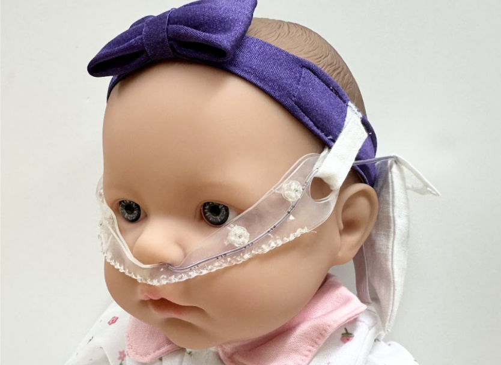
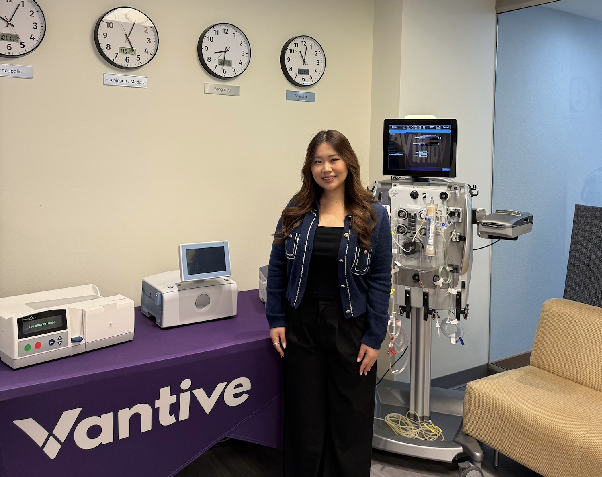
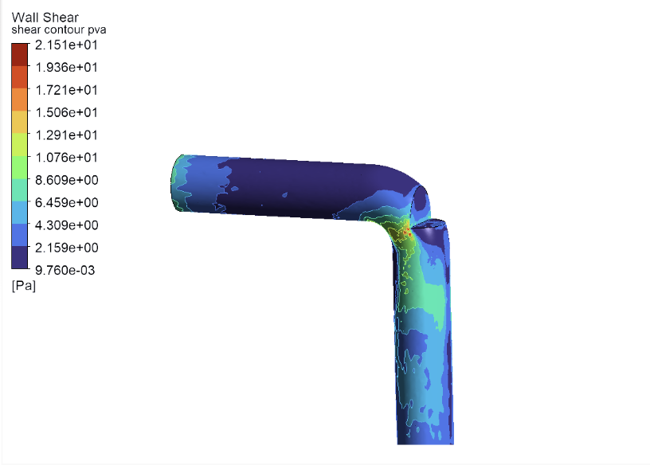
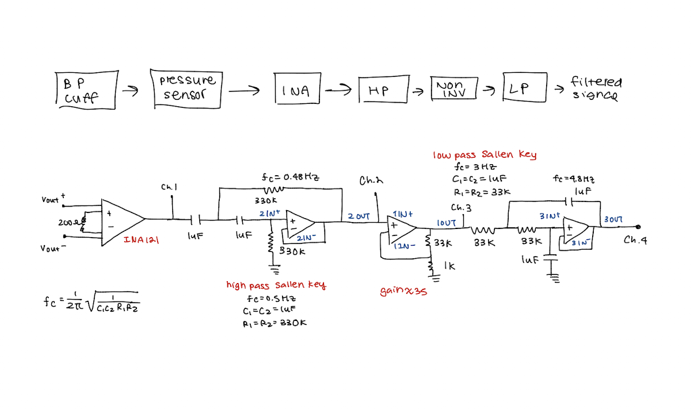
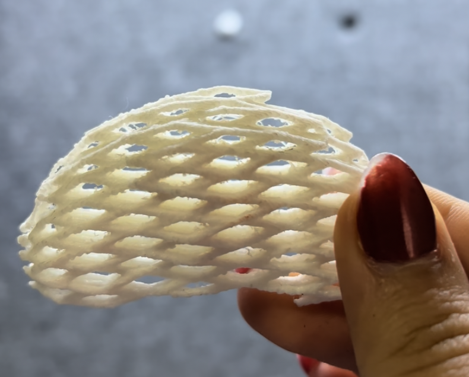
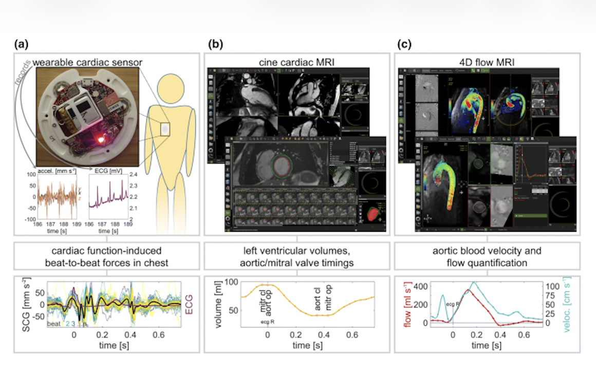
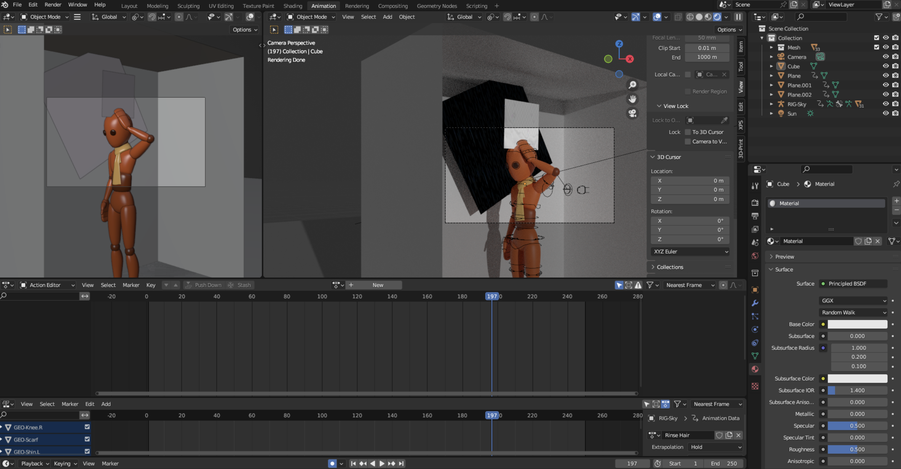
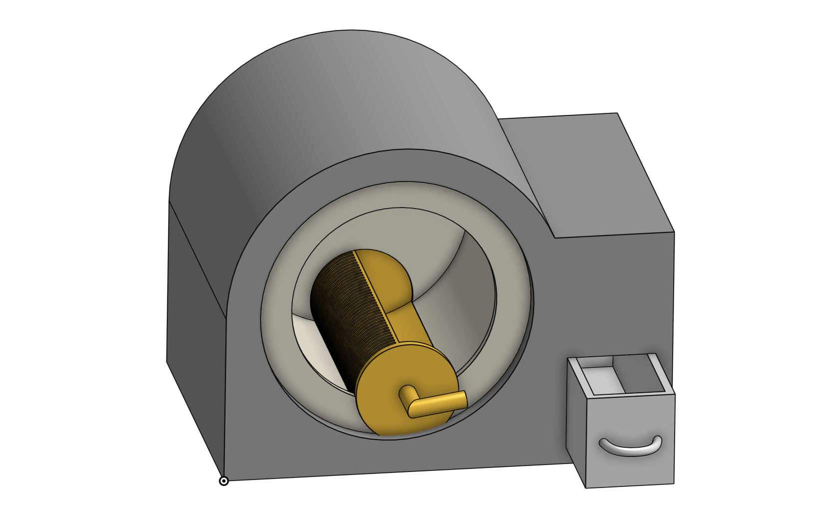
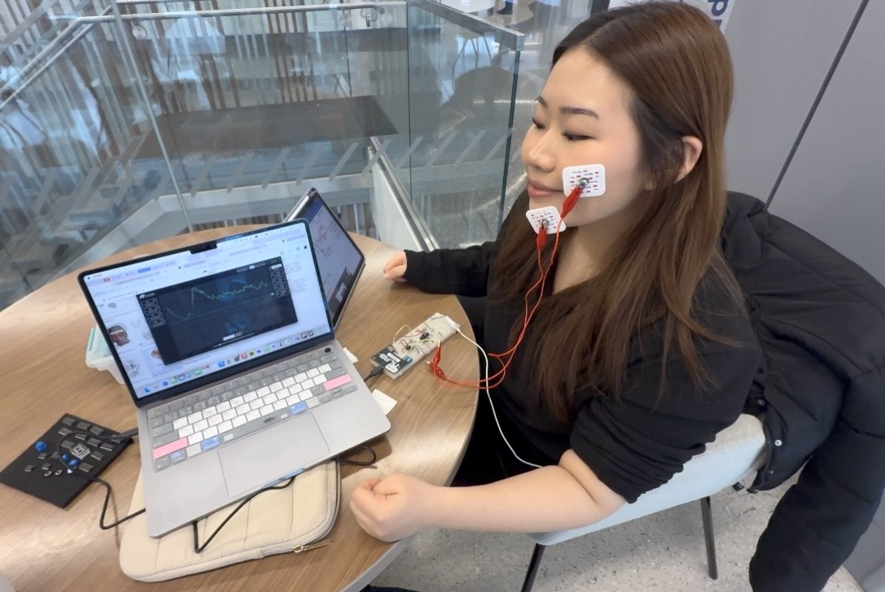

Selected Work

01 — Medical Device
TubiHold
A non-invasive and non-adhesive tube securement system that eliminates tape-based skin trauma in high-acuity cardiac environments through 7+ design iterations and clinical usability validation.
→
02 — Industry
Vantive Exploratory and Innovation R&D Intern
Decomposed and identified product requirements for an exploratory stage device and tested device through leading design reviews with human factors engineers.
→
03 — Capstone
TB Aerosol Diagnostics
Engineered an aerosol capture device to detect TB in non-sputum producing patients using computational fluid dynamics and a nebulizer-based cough generator.
→
04 — Medical Device
Blood Pressure Cuff
Developed a blood pressure oscillometry system using a pressure-to-voltage transducer, custom signal-conditioning circuitry, and Python-based signal processing to estimate heart rate, mean arterial pressure, and blood pressure values from cuff pressure data.
→
05 — 3D Printing
Kidney 3D Print Capstone
Led an independent project to design and manufacture a 3D-printed kidney scaffold for tissue engineering research. Collaborated with researchers while applying CAD, 3D printing, and biomaterials knowledge to develop and optimize scaffold prototypes.
→
06 — Business Case
CardioVIBES
Consulted on the commercialization strategy for CardioVIBES, a non-invasive cardiac screening technology developed at Northwestern. Conducted 30+ stakeholder interviews and market analyses to identify target markets, competitive positioning, value propositions, and expansion opportunities.
→
01 — Design Communication Award
ADD Showering System
Automated shower assistance for a 600+ resident care facility, designed using IDD and ABA therapy research to reduce supervision burden.
→
02 — Product Design
Accessible Cutting Board
Applied user-centered design methods to create a cutting board that securely stores knives and remains stable during use, addressing the needs of users with reduced hand function, tremors, and other accessibility considerations.
→
03 — Product Design
Mechanical Litter Box
Developed a human-centered pet care product that streamlines litter box cleaning through a simple mechanical filtration system. Leveraged user interviews, market and patent research, CAD modeling, and prototype testing to balance usability, affordability, and pet-owner needs.
→
04 — Electronics
Muscle Game & Emoji Circuits
Used EMG sensors and electrodes to measure muscle activity from arm movements and facial expressions. Developed a muscle-controlled ping pong game and an emoji detection system that translates real-time smiles, frowns, and neutral expressions into digital outputs.
→